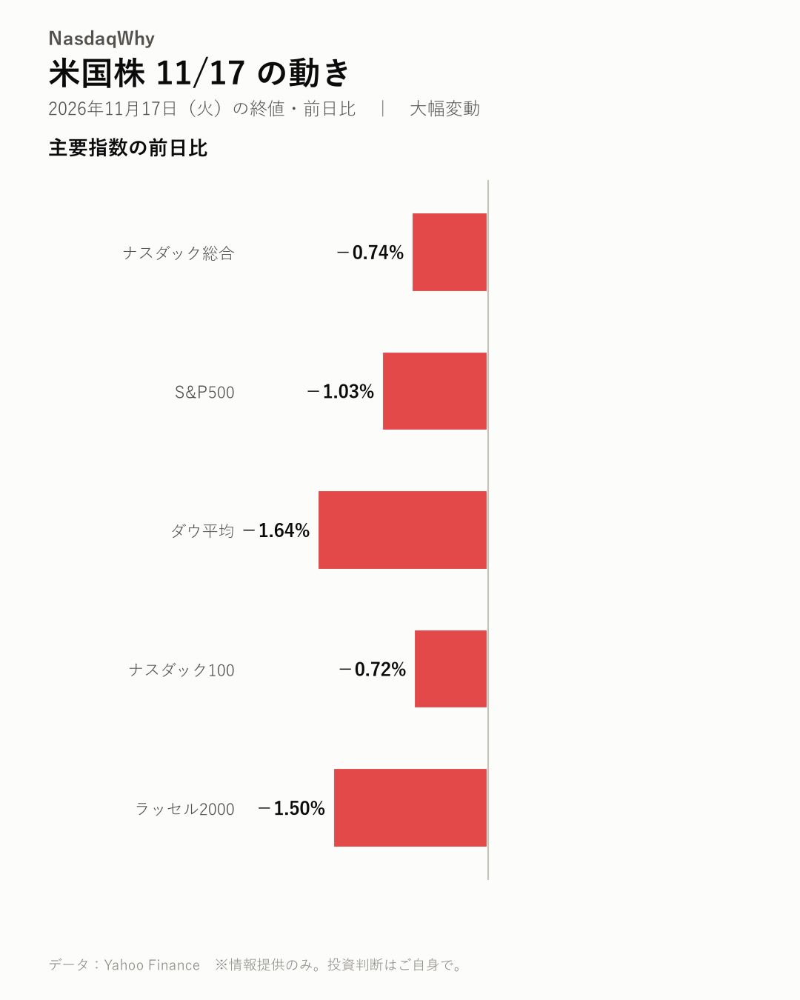
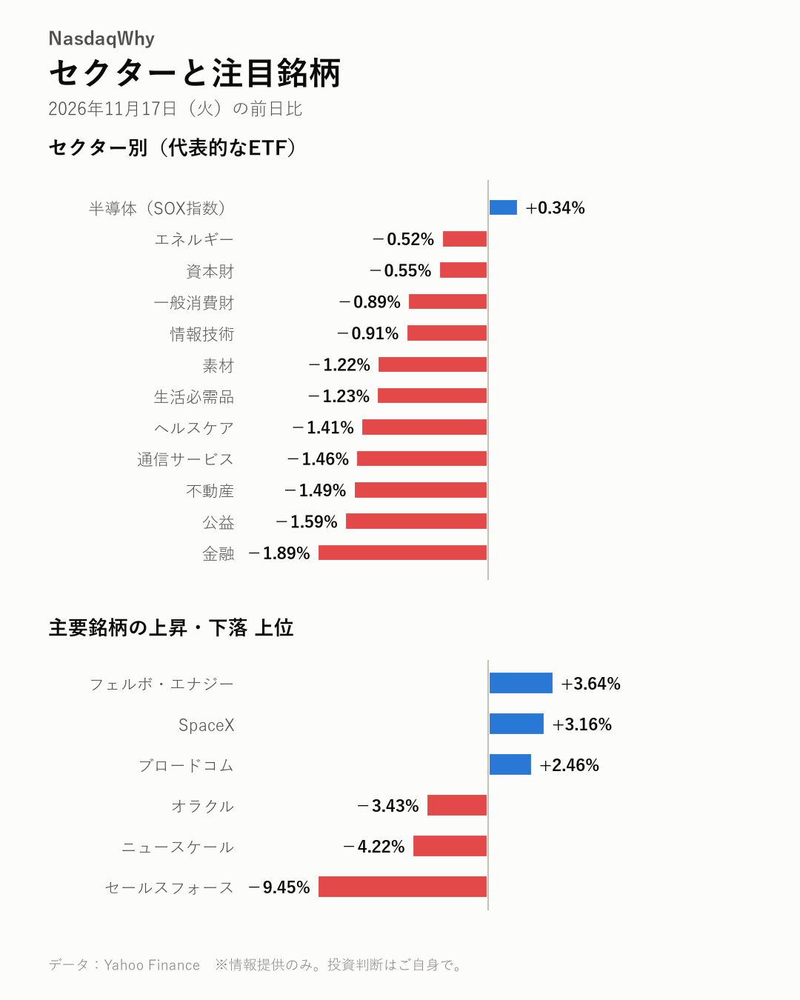

11/17の米国株：セールスフォース急落、ソフトウエア株はなぜ売られた？
2026年11月17日（火）の米国市場（日本時間の翌朝更新） ｜ 大幅変動
今日の疑問
セールスフォース急落、ソフトウエア株はなぜ売られた？
セールスフォースは-9.45%と急落し、ソフト株売りを主導した。AI企業Anthropicの上場を前に、AIが既存ソフトの事業を奪うとの警戒が強まった。システム障害が相次いだことも不安を誘った。同社の業績悪化を示す材料はまだ見当たらず、次に上場後の反応を確かめたい。

主要指数
| 名前 | 終値 | 前日比 | 騰落率 |
|---|---|---|---|
| ナスダック総合 | 24,328.38 | -181.38 | -0.74% |
| S&P500 | 7,340.53 | -76.06 | -1.03% |
| ダウ平均 | 50,759.42 | -848.75 | -1.64% |
| ナスダック100 | 27,001.79 | -195.37 | -0.72% |
| ラッセル2000 | 2,701.87 | -41.07 | -1.50% |
なぜ動いた？
- Anthropicの上場を前に、AI企業が既存ソフトの事業を脅かすとの警戒が強まった。セールスフォースが売りを主導した。（出典：Yahoo Finance、Yahoo Finance、Seeking Alpha、Proactive financial news、Yahoo Finance）
- システム障害が相次いだ。ソフト会社はAIの悪用に特に弱いとのアナリストの指摘も、売りに拍車をかけた。（出典：MarketWatch、Invezz）
- エヌビディアの決算を前に、投資家が様子見に回った。主要指数がそろって下げた。（出典：CNBC TV18、Yahoo Finance、Yahoo Finance）
- GF証券がNANDの価格予想を引き下げ、供給過剰を警告した。マイクロンなどメモリー株の重荷になった。（出典：24/7 Wall St.、TradingView）
深掘り：大きく動いた背景
米国株は幅広く売られ、ダウ平均は-1.64%、S&P500は-1.03%だった。下げの中心はソフトウエア株だ。セールスフォースは-9.45%と急落し、S&P500の値下がり銘柄の中でも目立った。ダウ平均の構成銘柄でもあり、指数の重荷になった。 まず意識されたのは、AI企業Anthropicの上場だ。ヤフー・ファイナンスによると、AI企業がセールスフォースの事業を丸ごと奪いにくると警告する投資家もいる。加えて、システム障害が相次いだ。マーケットウォッチは、ソフト会社はAIの悪用に特に弱いとのアナリストの見方を伝えた。 別の見方もある。スティフェルは同社株の買い評価を据え置いた。割安との分析や、売られすぎを指摘する声も出ている。同社自身の業績悪化を示す材料は見当たらない。 相場全体では、エヌビディアの決算を前に様子見の空気が強い。S&P500は長期の移動平均線を下回り、AI関連株の調整が続く。半導体指数は+0.34%と逆行したが、明確な材料は見当たらない。 まだ分からないのは、AIへの警戒がソフト各社の業績見通しにどこまで及ぶかだ。次にエヌビディアの決算と、Anthropic上場後の値動きを確かめたい。
セクター
全セクターが下落した。金融が-1.89%で最も弱く、公益も-1.59%と下げた。半導体指数は+0.34%と逆行して上げたが、明確な材料は見当たらない。
- 騰落率の高い順：半導体（SOX指数） +0.34%、エネルギー -0.52%、資本財 -0.55%
- 騰落率の低い順：金融 -1.89%、公益 -1.59%、不動産 -1.49%

注目銘柄
セールスフォースは-9.45%と急落した。ソフト株安の流れでオラクルは-3.43%、マイクロソフトは-2.27%。SpaceXはバンク・オブ・アメリカの強気姿勢を手がかりに+3.16%と上げた。
- 上昇：フェルボ・エナジー（FRVO）+3.64%、SpaceX（SPCX）+3.16%、ブロードコム（AVGO）+2.46%
- 下落：セールスフォース（CRM）-9.45%、ニュースケール（SMR）-4.22%、オラクル（ORCL）-3.43%
半導体トピック
- GF証券がNANDの価格予想を下げ、供給過剰を警告した。（24/7 Wall St.）
- DRAMの価格カルテル訴訟で、メモリー大手の棄却の訴えが退けられた。（PYMNTS.com、PYMNTS.com）
- アプライド・マテリアルズはAI需要を受け、装置の生産を倍増させる計画だ。（THE ELEC, Korea Electronics Industry Media）
関連市場
| 名前 | 終値 | 前日比 | 騰落率 |
|---|---|---|---|
| 米10年債利回り | 5.103% | -0.018pt | ― |
| ドル円 | 159.36 | -0.42 | -0.26% |
| 金先物 | 3,853.30 | +0.30 | +0.01% |
| 原油先物(WTI) | 85.64 | -0.08 | -0.09% |
| ビットコイン | 64,366.60 | -489.24 | -0.75% |
米10年債利回りは5.103%に低下した。ドル円は-0.26%で、円高ドル安方向。金先物はほぼ横ばい、原油先物は-0.09%。ビットコインは-0.75%だった。
今後の注目
- エヌビディアの決算と、その後の半導体株・AI関連株の反応（CNBC、Yahoo Finance）
- AI企業Anthropicの上場と、ソフトウエア株への波及（CNBC、Yahoo Finance）
- サムスン・SK hynix・マイクロンのDRAM価格カルテル訴訟の行方（PYMNTS.com、PYMNTS.com）
- 12/9（水） FRBのFOMC（米連邦公開市場委員会）での金融政策の発表（公式発表）
出典（見出し）
- Yahoo Finance：Salesforce Sinks 9% as Software Slides Before Anthropic IPO: Investor Warns AI Companies Seek to “Destroy Salesforce Entirely”（記事）
- Yahoo Finance：Salesforce Sells Off Before Anthropic’s IPO（記事）
- Seeking Alpha：Salesforce leads enterprise software stocks lower ahead of Anthropic's IPO（記事）
- Proactive financial news：Salesforce leads Wall Street software sell-off as investors brace for Anthropic IPO（記事）
- Yahoo Finance：Salesforce (CRM) Could Be 16% Undervalued As AI Agent Fears Hit Software Stocks（記事）
- MarketWatch：Why Salesforce’s stock led the S&P 500’s decliners amid tech jitters（記事）
- Invezz：Salesforce stock slides as technology outages rattle software sector（記事）
- CNBC TV18：US stock market today: Dow, S&P 500, Nasdaq slip ahead of Nvidia earnings（記事）
- Yahoo Finance：Stock Market Today: Nvidia’s 26% Plunge Puts Wall Street on Edge Ahead of Earnings Tonight（記事）
- Yahoo Finance：S&P 500, Dow, Nasdaq End Lower As Investors Hold Back Ahead Of Nvidia Earnings, Anthropic IPO This Week — NVDA, TSLA, ANT In Focus（記事）
- 24/7 Wall St.：SanDisk and Micron Fall 4% as GF Securities Cuts NAND Price Forecast and Warns of a Glut; SK Hynix Dips（記事）
- TradingView：Micron, SanDisk and SK Hynix Face New Warning From Wall Street（記事）
- PYMNTS.com：CPI | Samsung, SK Hynix and Micron Must Face US DRAM Price-Fixing Lawsuit（記事）
- PYMNTS.com：CPI | Samsung, SK Hynix and Micron Lose Bid to Dismiss US DRAM Antitrust Suit（記事）
- THE ELEC, Korea Electronics Industry Media：Applied Materials to Double Equipment Output by 2028 on AI Chip Demand（記事）
- CNBC：Investors look to Nvidia's earnings and Anthropic's IPO to refresh the tech rally（記事）
データ：Yahoo Finance
📝 note でも読めます（図つき・まとめ）：note.com/nasdaqwhy